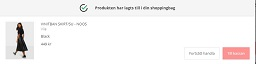
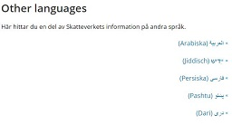
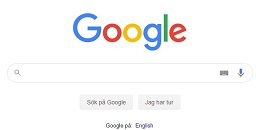
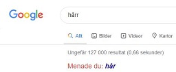
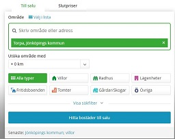
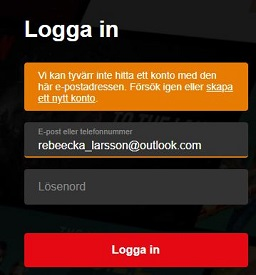

| Law |
Your explanation |
URL to example |
Example description |
Example image |
| Visibility of system status |
Denna lag handlar om att hålla användaren uppdaterad om vad som händer på sidan. Exempelvis när du ska ladda upp en fil visas det information om hur lång tid det tar. Ett annat exempel är att visa sidor där du kan handla kläder har så att det kommer upp en ruta när ett klädesplagg läggs i kundkorgen. |
www.nelly.com |
Nelly använder sig av denna då du klickar dig in på en produkt som du vill köpa, väljer vilken storlek och sedan kommer det upp en ruta som visar att du har lagt produkten i din shoppingbag. |
 |
| Match between system and the real world |
Handlar om att sidan ska vara så tydlig som möjligt och att det ska erbjudas flera språk till användaren så att oavsett vilket land du är ifrån ska alla kunna läsa. |
www.skatteverket.se |
Skatteverket använder sig av denna då de har en flick längst upp på sidan som heter "other language" och när du klickar på den kommer språken upp. Skatteverket har även anpassat till att språk som läses från höger till vänster har framställts |
 |
| User control and freedom |
Handlar om att ge användaren ett alternativ om att acceptera eller inte acceptera exemplevis cookies. |
www.1177.se |
När jag sökte på 1177 kom en ruta upp längst ner på sidan och där får du klicka i om du accepterar cookies eller inte. |
|
| Consistency and standards |
Handlar om sidan är konsekvent, fungera alltid på samma sätt. Den ska inte använda komplicerade ord och ska inte göra användadaren förvirrad. |
www.google.se |
Google använder sig oftast har oftast av samma färger och har samma logotyp. Rutan där man söker sitter alltid på samma plats. |
 |
| Error prevention |
Hadlar om att flera sidor använder sig av denna för att varna användaren för att ett fel har hänt. Denna metod skyddar även användaren från att något fel kan ske. |
www.google.se |
Google använder sig av denna funktion för att underlätta för användaren att hitta rätt även om du exempelvis har stavat fel. Google ger även förslag till ord som du kanske mednar när du håller på att skriva. |
 |
| Recognition rather than recall |
Handlar om att det ska vara lätt för användaren att hitta tillbaka till exempelvis en sökninng som tidigare har gjorts. |
www.hemnet.se |
Hemnet använder sig av detta i deras sökruta. Genom att kunnna återkomma till det jag tidigare har sökt på, detta kan ge en potentionell ökning av försöljning av exempelvis hus. |
 |
| Flexibility and efficient use |
Handlar om att göra det lättare för användaren. Det ska gå snabbt och smidigt att göra ett arbete i exempelvis photoshop. |
https://write-box.appspot.com/ |
Write-box är likt word fast här skriver du bara på ett blankt papper. Uppe i högra hörnet finns det flikar som kan tryckas på för att exempelvis komma till shortcuts. |
 |
| Aesthetic and minimalist design |
Handlar om att det är viktigt att sidorna är stilrena då det annars är svårt för användaren att kunna fokusera på det användaren är ute efter. |
www.apple.com |
Apple använder sig av denna metod då deras sida är väldigt stilren och har bara med det som är relevant. Apple har även organiserade flikar högst upp på sidan. |
|
| Help users recognise, diagnose and recover from errors and help and documentation |
Handlar om att vid ett fel så är det viktigt att förklara vad som är fel, det ska vara tydligt så att användaren förstår med exempelvis en färg som visar tydligt var felet är. Det handlar även om att exempelvis när du ska logga in på netflix så kan du se till så att dina inloggningsuppgifter finns sparat |
www.netflix.com |
Netflix använder sig av denna då jag ska logga in och exmpelvis råkade få med en extra bokstav i min epost så varnar den för det samt att färgen orange uppkommer och visar vart jag har gjort fel. |
 |